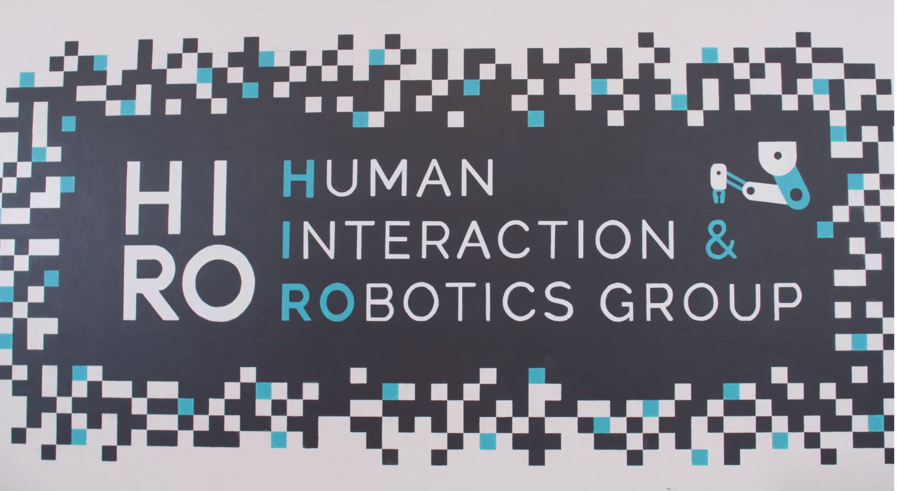

Developing multi-modal robot learning systems at CU Boulder's Human Interaction & RObotics Group, combining visual and proprioceptive inputs for high-DoF manipulation platforms. Building full-stack pipelines spanning data collection, policy training, and real-time ROS2 deployment.

Building transformer-based document classification systems for large-scale business text at CU Boulder's Leeds School of Business. Architected hierarchical RoBERTa and Longformer pipelines with custom preprocessing to handle documents far exceeding standard token limits, achieving strong F1 under heavy class imbalance.
Designed and deployed a real-time Indian Sign Language recognition system using MediaPipe keypoint extraction and LSTM sequence modeling, achieving 97% test accuracy. Optimized the inference pipeline for a 20% speed improvement and published findings at an international Springer conference.